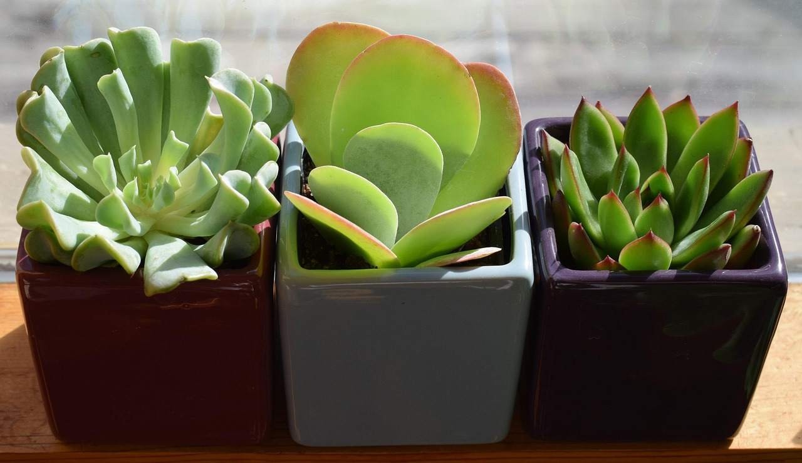

Starting your plant parent journey can feel intimidating. With so many beautiful options displayed on social media, it's easy to feel overwhelmed or worry you don't have the right conditions or skills to keep plants alive.
The good news? There are plenty of forgiving, easy-care plants that can thrive even under the care of complete beginners. These plants tolerate neglect, adapt to various light conditions, and don't require specialized care—making them perfect first plants.
In this guide, we'll introduce you to 10 virtually indestructible plants that will boost your confidence as a new plant parent.
What You'll Find in This Guide
- Why These Plants Are Perfect for Beginners
- 1. Snake Plant (Sansevieria)
- 2. Pothos (Epipremnum aureum)
- 3. ZZ Plant (Zamioculcas zamiifolia)
- 4. Spider Plant (Chlorophytum comosum)
- 5. Succulents (Various)
- 6. Peace Lily (Spathiphyllum)
- 7. Chinese Evergreen (Aglaonema)
- 8. Aloe Vera
- 9. Rubber Plant (Ficus elastica)
- 10. Heartleaf Philodendron
- Essential Plant Care Tools for Beginners
- FAQs About Beginner Plants
Why These Plants Are Perfect for Beginners
The plants on this list have been chosen based on several key factors that make them ideal for novice plant parents:
- Forgiving of inconsistent watering - They can handle it if you forget the occasional watering
- Adaptable to various light conditions - Most will survive in less-than-ideal lighting situations
- Resilient to common issues - They're less prone to pest problems and diseases
- Clear communication - They show visible signs when they need attention
- Low maintenance needs - They don't require frequent repotting or specialized care
Let's dive into our top recommendations for beginner-friendly plants!
1. Snake Plant (Sansevieria)
Snake Plant Care Essentials
Difficulty Level: Very Easy
The Snake Plant (also called Mother-in-Law's Tongue) is arguably the most forgiving houseplant you can find. With its striking upright leaves and architectural shape, it adds style to any space while requiring minimal attention.
What makes Snake Plants so beginner-friendly is their incredible drought tolerance. These plants store water in their thick leaves, allowing them to go weeks without watering. In fact, the most common way beginners kill Snake Plants is by overwatering them.
They'll thrive in almost any light condition—from low light corners to bright spots (just avoid direct sunlight, which can scorch the leaves). They're also excellent air purifiers, removing toxins like formaldehyde from your home.
Costa Farms Snake Plant, 2ft Tall
$29.99This elegant 24" Snake Plant comes in a decorative planter and is ready to display immediately. Perfect size for beginners.
Check Price on AmazonPro Tip: For beginners, we recommend the classic Sansevieria trifasciata variety, which is the most forgiving. Save the rarer varieties for when you have more experience.
2. Pothos (Epipremnum aureum)
Pothos Care Essentials
Difficulty Level: Very Easy
Pothos (or Devil's Ivy) is a vining plant with heart-shaped leaves that's nearly impossible to kill. Its trailing stems can be left to cascade from a shelf or trained to climb up a support, making it versatile for various spaces.
What makes Pothos perfect for beginners is how clearly it communicates its needs. When it needs water, the leaves visibly droop—and they perk right back up after watering. This clear communication helps new plant parents learn about their plant's needs without the guesswork.
Pothos also comes in several varieties with different leaf patterns (Golden, Marble Queen, Neon, Jade), allowing you to build a collection with the same easy care routine.
American Plant Exchange Golden Pothos
$19.99This established 6" pothos comes ready to grow and is perfect for hanging baskets or shelves. One of the easiest plants to grow and propagate.
Check Price on AmazonPro Tip: Pothos is one of the easiest plants to propagate. Simply cut a stem below a node (the bumpy part where leaves grow from), place it in water, and watch it grow roots in a few weeks.
3. ZZ Plant (Zamioculcas zamiifolia)
ZZ Plant Care Essentials
Difficulty Level: Very Easy
The ZZ Plant has gained popularity for its glossy, dark green leaves and exceptional tolerance for neglect. Its thick, potato-like rhizomes store water, making it extremely drought-resistant and perfect for forgetful waterers.
What makes ZZ Plants perfect for beginners is their ability to thrive in virtually any indoor lighting condition. They'll grow in low light corners where most other plants would struggle, though they'll grow faster in brighter spots.
ZZ Plants rarely have pest problems and can go months without attention. In fact, they generally prefer to be left alone rather than fussed over, making them perfect for busy people or those who travel frequently.

Costa Farms ZZ Plant in 10" Decorator Pot
$34.99This mature ZZ Plant comes in a stylish planter and stands approximately 2 feet tall. Perfect for those dark corners where other plants won't survive.
Check Price on AmazonPro Tip: The number one cause of ZZ Plant death is overwatering. Always let the soil dry out completely between waterings. When in doubt, wait another week.
Essential Plant Care Tools for Beginners
Even with low-maintenance plants, having the right basic tools will make your plant care routine easier and more effective. Here are the essential tools we recommend for beginners:
Haws Indoor Watering Can, 1-Liter
$24.95This well-balanced watering can features a precise spout for targeted watering without spills. The 1-liter capacity is perfect for apartment plant collections.
Check Price on AmazonXLUX Soil Moisture Meter
$12.99This affordable moisture meter takes the guesswork out of watering—perfect for beginners who tend to overwater their plants. No batteries required.
Check Price on AmazonMiracle-Gro Indoor Potting Mix, 6 qt.
$10.97This indoor-specific potting mix is formulated to provide good drainage and prevent gnats—a common problem with regular potting soil indoors.
Check Price on AmazonFrequently Asked Questions About Beginner Plants
How often should I water my beginner plants?
Most of the plants on this list prefer to dry out between waterings. As a general rule, it's better to underwater than overwater. Check the soil moisture by sticking your finger about 2 inches deep—if it's still moist, wait a few more days. Each plant has specific needs, but most beginner-friendly plants need watering every 1-4 weeks.
What if I don't have much natural light in my home?
Low light doesn't mean no plants! Snake Plants, ZZ Plants, and Pothos can all tolerate low light conditions, though they may grow more slowly. If you have very dark spaces, consider a small grow light to supplement.
How do I know if I'm overwatering my plants?
Signs of overwatering include yellowing leaves, soft or mushy stems, moldy soil surface, and brown spots with yellow halos. If you notice these symptoms, reduce watering frequency and make sure your pot has drainage holes.
Do I need to fertilize these beginner plants?
While not strictly necessary, a light application of houseplant fertilizer during the growing season (spring and summer) can help your plants thrive. Use at half the recommended strength to avoid fertilizer burn.
What should I do if I see pests on my plants?
The plants on this list are generally resistant to pests, but no plant is immune. If you notice small insects, webs, or sticky residue, isolate the affected plant and treat it with insecticidal soap or neem oil. Early detection is key to preventing infestations.
Start Your Plant Journey with Confidence
Beginning your plant parent journey doesn't have to be overwhelming. The plants we've recommended here are forgiving, adaptable, and will help you build confidence in your plant care abilities.
Remember that even experienced plant owners occasionally lose plants—it's part of the learning process. Start with one or two of these beginner-friendly options, and as you gain experience, you can gradually add more variety to your indoor garden.
Happy growing!
This post was last updated on April 11, 2025 to ensure all information and product recommendations remain current.